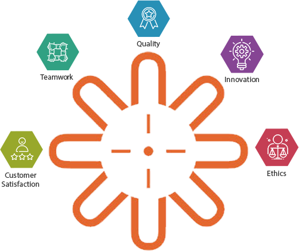

Universal Medicap Ltd. (UML) is a leading manufacturer of parenteral primary packaging solutions for pharmaceutical applications. We are committed to meet & exceed customer expectations by ensuring the highest standard of product quality and services.
UML was established in 1989 with a vision to protect the health and safety of patients worldwide. We cater to both domestic and global pharmaceutical and healthcare companies with products that protect the effective life of parenterally administered drug products.
Universal ISO-MED, an in-house Gamma Irradiation facility of Universal Medicap Ltd., established in 2005, makes us the first pharmaceutical rubber stopper manufacturing company to have such facility. We also provide contractual gamma irradiation services for industrial products, pharmaceutical & healthcare products including medical devices and components, as well as services of decontamination & disinfestation of food and allied products.
UML Biomedia, a division of Universal Medicap Ltd., established in 2012, is a manufacturer of “Ready To Use” pre-poured media plates used by the pharmaceutical & healthcare industry for microbial environment monitoring of clean rooms, personnel monitoring & surface monitoring.
Our Core Values
Quality

We are committed to the highest level of operational
excellence in all spheres. We invest time, energy
and resources to build and consolidate the Quality
Management System.
INNOVATION
We at UML believe in constant learning.
We encourage innovation at all levels of
our functioning. We believe in turning
‘problems into solutions’.